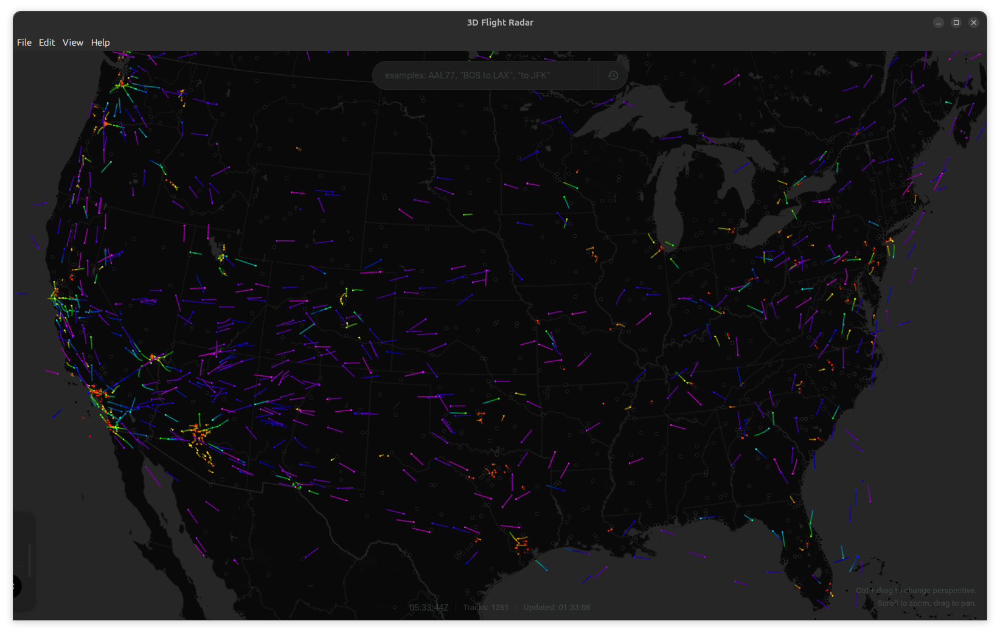
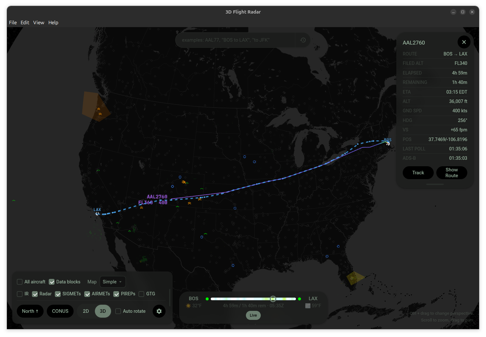
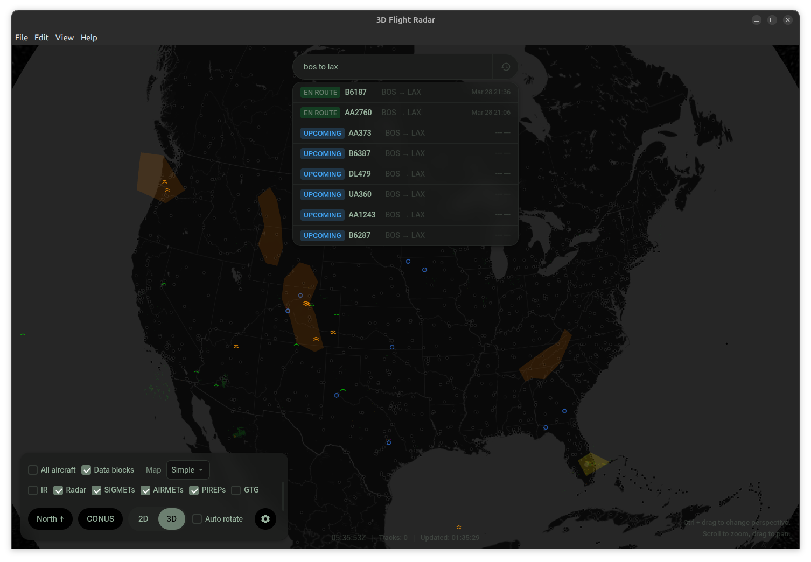
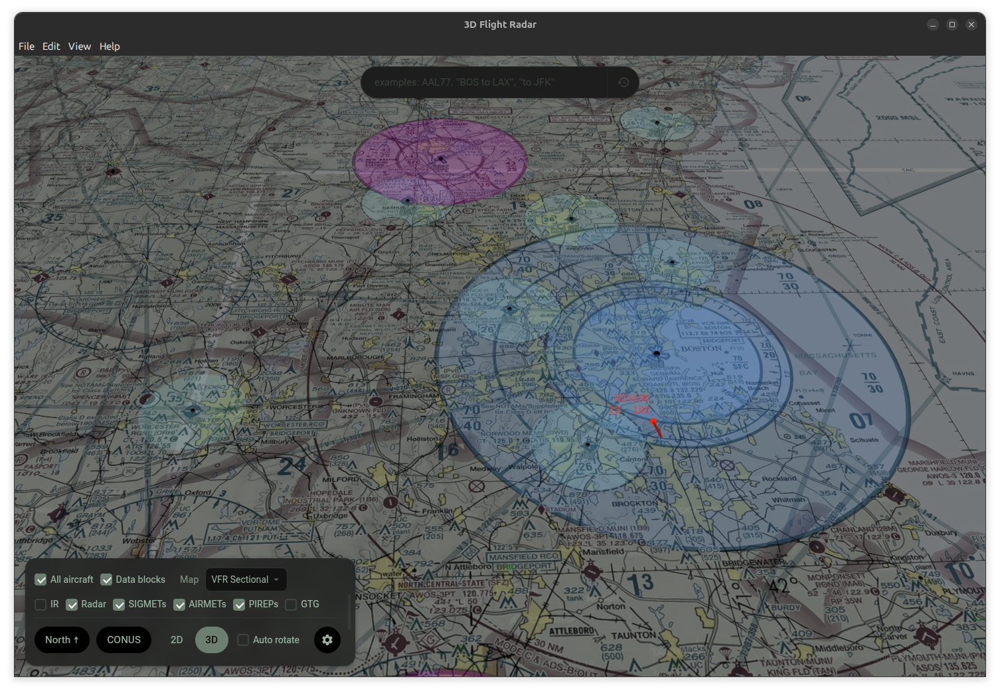
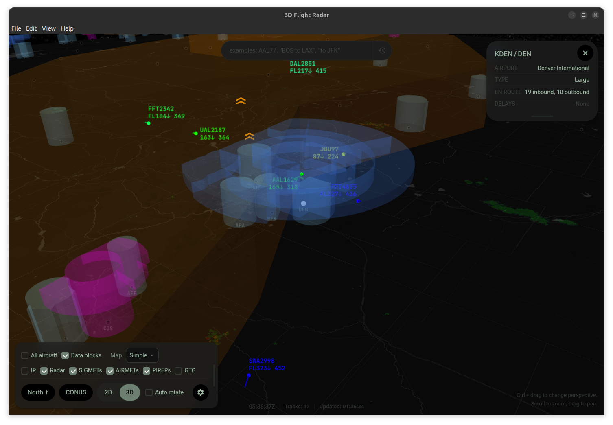

Follow aircraft across an interactive globe with live ADS-B data, weather radar, turbulence overlays, and full flight plan search. Available as an app for MacOS, Windows and Linux.

Pan, zoom, and tilt a full 3D globe. Switch between 2D and 3D views, multiple map layers including VFR/IFR charts, and auto-rotate mode.
Real-time ADS-B positions from the OpenSky Network with altitude-colored trails, velocity vectors, and data blocks showing callsign, altitude, and speed.
NEXRAD composite radar, GOES infrared satellite imagery, turbulence SIGMETs and AIRMETs as 3D volumes, PIREPs, and GTG turbulence forecast heatmaps.
Search by flight number or natural language ("Delta from ATL to LAX today"). See filed routes, waypoints, flown tracks, and a timeline scrubber with weather forecasts. (FlightAware API key needed.)
Airport markers with delay status, Class B/C/D airspace boundaries in 3D, VOR/NDB/DME navaids, and named waypoint fixes.
Dark and light themes with custom accent colors, adjustable font sizes, trail modes, altitude exaggeration, weather layer opacity, and settings import/export.
See Flight Radar 3D in action.




Download the newest packaged build from the GitHub releases page.
git clone https://github.com/jonbirge/flight-radar.git
cd flight-radar
npm install
npm run dev